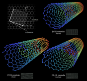

Wigbekken
Voor onze Wigbekken is onze research & development afdeling continu op zoek naar nieuwe high-tech materialen,zoals carbon composites met nano tubes. Hiermee wordt een product verkregen dat in staat is de concurrentie te lijfte gaan.
Voor onze composieten gebruiken we Meerwandige koolstofnanobuizen (MWCNT=Multi-Wall Carbon Nanotube). Ze bestaanuit meerdere lagen opgerold grafeen en hebben een grotere diameter dan SWCNT (Single-Wall Carbon Nanotube), typischzo'n 5-100 nm. De afstand tussen twee lagen in een MWCNT is ongeveer gelijk aan de afstand tussen twee lagen grafeenin grafiet: zo'n 0.33 nm. Bij Volronn passen wij vrijwel altijd MWCNT toe vanwege de verhoogde weerstand tegen chemicaliën.MWCNT kunnen gefunctionaliseerd worden (er kunnen andere moleculen aan het oppervlak gebonden worden voor extrafunctionaliteiten) zonder dat de structuur verloren gaat.